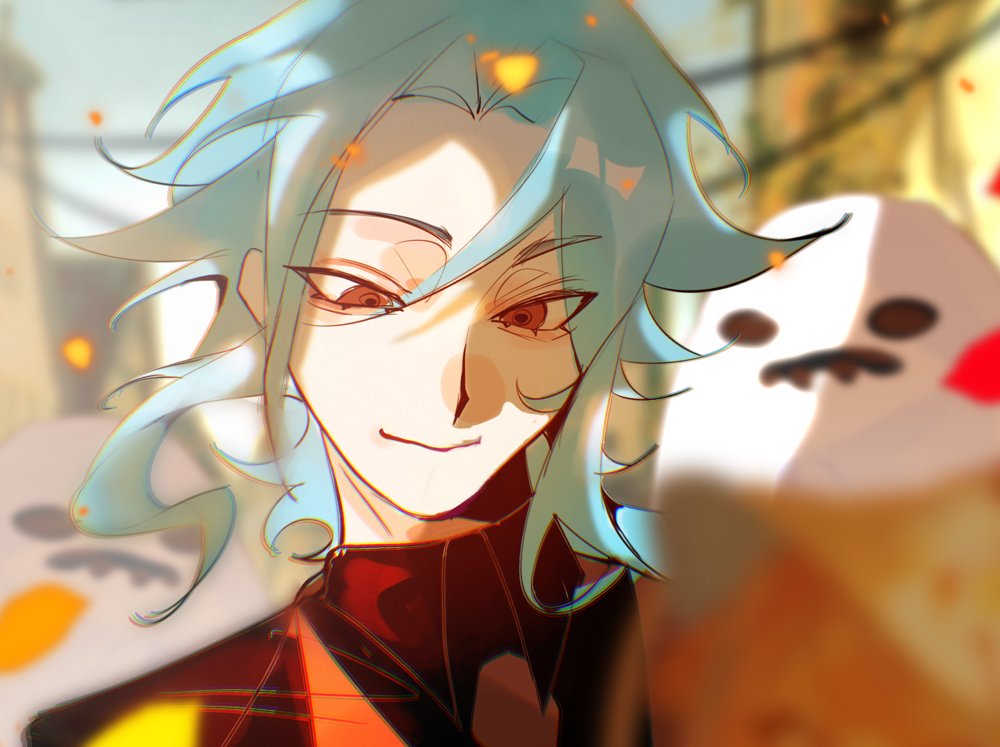
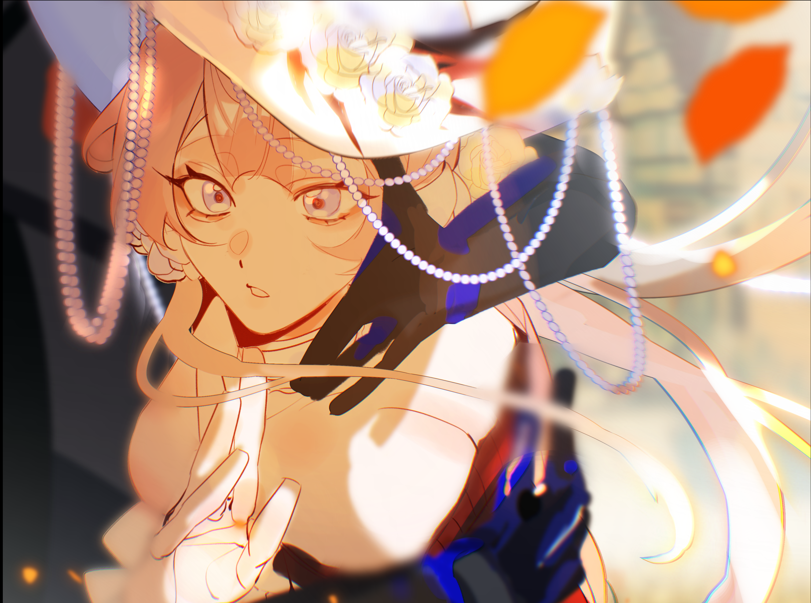

PROFILE A · THE RAVEN
贊迪克（多托雷）
象徵：黑羽、觀測、未知
他習慣站在常人無法觸及的領域，將世間萬物視為值得解析的命題。對他而言，未知並非禁區，而是尚未得到答案的研究。理性、傲慢，且從不輕易相信既定的法則。
直到某次深淵事件，他遇見了一個無法被常規解釋的異常個體。
「有趣……妳究竟還隱藏著多少尚未被發現的可能性？」

象徵：黑羽、觀測、未知
他習慣站在常人無法觸及的領域，將世間萬物視為值得解析的命題。對他而言，未知並非禁區，而是尚未得到答案的研究。理性、傲慢，且從不輕易相信既定的法則。
直到某次深淵事件，他遇見了一個無法被常規解釋的異常個體。
「有趣……妳究竟還隱藏著多少尚未被發現的可能性？」

象徵：白雪、星月、自由
她從不甘於活成他人所期待的模樣。對知識與未知事物抱有強烈好奇，熱衷於學習各種技能，試圖讓自己擁有足以選擇人生的力量。
她不願被定義，也不願再次成為任人擺布的弱者。
「若命運早已替我安排好道路，那麼我偏要走向它未曾預料的地方。」
他將她視為值得探究的異常，她則將他視為通往未知領域的契機。 一場始於利益與好奇的相遇，在無數次觀測、試探與碰撞之中逐漸變質。當研究之外的情感開始介入，這段關係也成了他們各自無法解釋的謎題。